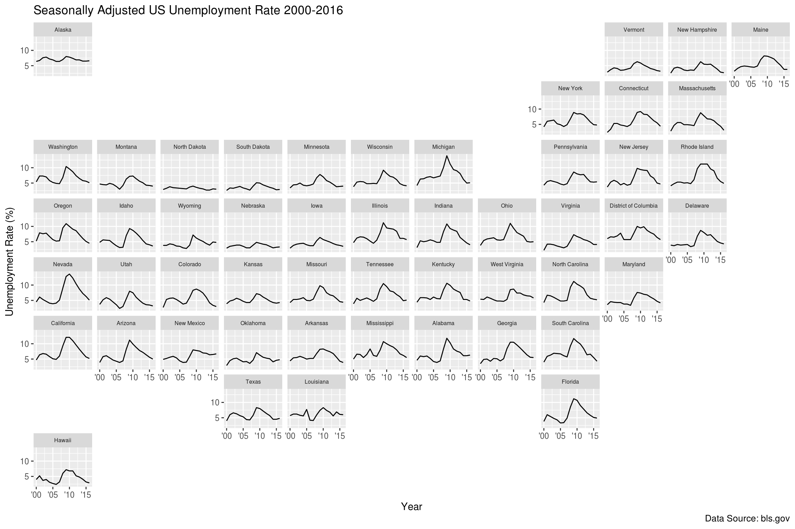
The geofacet R package provides a way to flexibly visualize data for different geographical regions by providing a ggplot2 faceting function facet_geo() which works just like ggplot2’s built-in faceting, except that the resulting arrangement of panels follows a grid that mimics the original geographic topology as closely as possible.
The idea is similar to that of the statebin, providing the additional benefits:
The merits of this visualization approach are not discussed at length here but will be addressed in a blog post soon (link will be provided when posted) along with a history this approach being used in the past.
install.packages("geofacet")
# or from github:
# devtools::install_github("hafen/geofacet")library(geofacet)
library(ggplot2)The main function in this package is facet_geo() and its use can be thought of as equivalent to ggplot2’s facet_wrap() except for the output it creates. If you know how to use ggplot2, then you essentially know how to use this package.
Let’s consider an example based on this article, which uses emoji / Chernoff faces to show various quality-of-life metrics for US states.
This data is available in the geofacet package under the name state_ranks.
head(state_ranks) state name variable rank
1 AK Alaska education 28
2 AK Alaska employment 50
3 AK Alaska health 25
4 AK Alaska wealth 5
5 AK Alaska sleep 27
6 AK Alaska insured 50A state with a rank of 1 is doing the best in the category and a rank of 51 is the worst (Washington DC is included).
Let’s use geofacet to create a bar chart of the state rankings. To do so, we create a ggplot2 plot using geom_col() to make a bar chart of the variable vs. rank. Then, instead of using facet_wrap() to facet the plot by state, we instead use facet_geo():
ggplot(state_ranks, aes(variable, rank, fill = variable)) +
geom_col() +
coord_flip() +
theme_bw() +
facet_geo(~ state)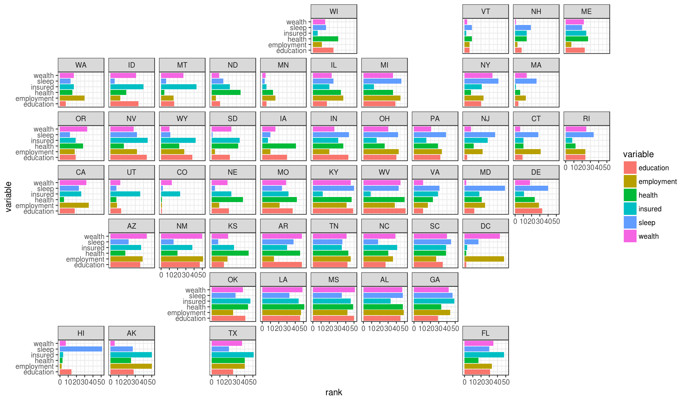
While this plot may not be as fun as the Chernoff faces, geofacet allows us to use a much more powerful visual encoding system (length of bars) to help the viewer much more effectively grasp what is going on in the data. For example, states with very low rankings across most variables (HI, VT, CO, MN) stand out, and geographical trends such as the southern states consistently showing up in the bottom of the rankings stands out as well. Why don’t people sleep in Hawaii?
This plot helps illustrate a couple of advantages this approach has over a traditional geographical visualization approaches such as choropleth plots:
Note that other than the arrangement of the facets, every other aspect of this plot behaves in the way you would expect a ggplot2 plot to behave (such as themes, flipping coordinates, etc.).
There are a few options in facet_geo() worth discussing:
grid argument, we can provide either a string specifying a built-in named grid to use, or we can provide our own grid as a data frame.label argument, we can specify which grid variable we want to use to label the facets.For example, another built-in grid in the package is called “us_state_grid2”.
head(us_state_grid2) row col code name
1 6 7 AL Alabama
2 1 1 AK Alaska
3 6 2 AZ Arizona
4 6 5 AR Arkansas
5 6 1 CA California
6 5 3 CO ColoradoLet’s use this grid to plot the seasonally adjusted US unemployment rate over time, using the state names as the facet labels:
ggplot(state_unemp, aes(year, rate)) +
geom_line() +
facet_geo(~ state, grid = "us_state_grid2", label = "name") +
scale_x_continuous(labels = function(x) paste0("'", substr(x, 3, 4))) +
labs(title = "Seasonally Adjusted US Unemployment Rate 2000-2016",
caption = "Data Source: bls.gov",
x = "Year",
y = "Unemployment Rate (%)") +
theme(strip.text.x = element_text(size = 6))With this we can see how the unemployment rate varies per state and how some of the patterns are spatially similar.
Specifying a grid is as easy as creating a data frame with columns containing the names and commonly-used codes for the geographical entities, as well as a row and col variable specifying where the entity belongs on the grid.
For example, another grid in the package is a grid for the 28 European Union countries, eu_grid1. Here we plot the GDP per capita over time for each country in the EU:
ggplot(eu_gdp, aes(year, gdp_pc)) +
geom_line(color = "steelblue") +
facet_geo(~ name, grid = "eu_grid1", scales = "free_y") +
scale_x_continuous(labels = function(x) paste0("'", substr(x, 3, 4))) +
ylab("GDP Per Capita in Relation to EU Index (100)") +
theme_bw()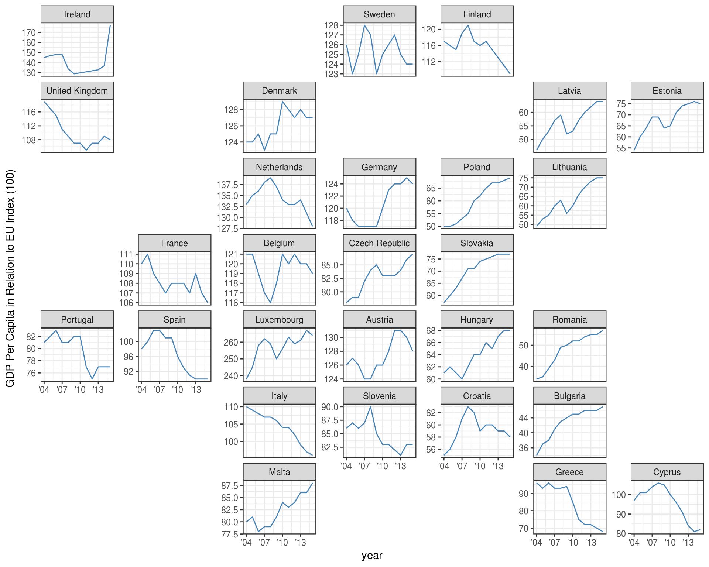
In this plot we are using a “free” y-axis, allowing the range of the y-axis to fill the available plotting space for each country. We do this because there is a large range of mean GDP across countries. Ideally ggplot2 would have a “sliced” axis range option that allows the y-axis range to vary but with each panel’s axis having the same length of range, making for a more meaningful comparison across countries.
This plot illustrates one potential downside of a geofaceted plot, which is that if the viewer is not already familiar with the underlying geography, the layout may not be very meaningful. There are some ideas to help with this that are being investigated.
To get the list of names of available grids:
get_grid_names()Note: More grids are available by name as listed here: https://raw.githubusercontent.com/hafen/grid-designer/master/grid_list.json [1] "us_state_grid1" "us_state_grid2"
[3] "eu_grid1" "aus_grid1"
[5] "sa_prov_grid1" "london_boroughs_grid"
[7] "nhs_scot_grid" "india_grid1"
[9] "india_grid2" "argentina_grid1"
[11] "br_states_grid1" "sea_grid1"
[13] "mys_grid1" "fr_regions_grid1"
[15] "de_states_grid1" "us_or_counties_grid1"
[17] "us_wa_counties_grid1" "us_in_counties_grid1"
[19] "us_in_central_counties_grid1" "se_counties_grid1"
[21] "sf_bay_area_counties_grid1" "ua_region_grid1"
[23] "mx_state_grid1" "mx_state_grid2"
[25] "scotland_local_authority_grid1" "us_state_grid3"
[27] "italy_grid1" "italy_grid2"
[29] "be_province_grid1" "us_state_grid4"
[31] "jp_prefs_grid1" "ng_state_grid1"
[33] "bd_upazila_grid1" "spain_prov_grid1"
[35] "ch_cantons_grid1" "ch_cantons_grid2"
[37] "china_prov_grid1" "world_86countries_grid"
[39] "se_counties_grid2" "uk_regions1"
[41] "us_state_contiguous_grid1" "sk_province_grid1"
[43] "ch_aargau_districts_grid1" "jo_gov_grid1"
[45] "spain_ccaa_grid1" "spain_prov_grid2"
[47] "world_countries_grid1" "br_states_grid2"
[49] "china_city_grid1" "kr_seoul_district_grid1"
[51] "nz_regions_grid1" "sl_regions_grid1"
[53] "us_census_div_grid1" "ar_tucuman_province_grid1"
[55] "us_nh_counties_grid1" "china_prov_grid2"
[57] "pl_voivodeships_grid1" "us_ia_counties_grid1"
[59] "us_id_counties_grid1" "ar_cordoba_dep_grid1"
[61] "us_fl_counties_grid1" "ar_buenosaires_communes_grid1"
[63] "nz_regions_grid2" "oecd_grid1" At the end of this vignette you can find several examples of these grids in action. You can learn how to submit your own below.
Creating your own grid is as easy as specifying a data frame with columns row and col containing unique pairs of positive integers indicating grid locations and columns beginning with name and code. You may want to provide different options for names, such as names in different languages, or different kinds of country codes, etc. (see sa_prov_grid1 for example).
One way to create a grid is to take an existing one and modify it. For example, suppose we don’t like where Wisconsin is located. We can simply change its location and preview the resulting grid with grid_preview().
my_grid <- us_state_grid1
my_grid$col[my_grid$code == "WI"] <- 7
grid_preview(my_grid)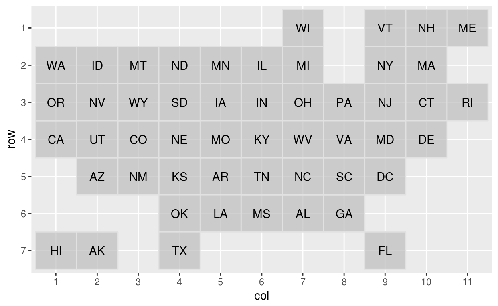
A much more fun way to design a grid is with a JavaScript app, “Grid Designer”. You can launch this application starting from scratch by visiting this link or from R by calling:
grid_design()This will open up a web application with an empty grid and instructions on how to fill it out. Basically you just need to paste in csv content about the geographic entities (the row and col columns are not required at this point). For example, you might go to wikipedia to get a list of the names of counties in the state of Washington and enter in that list into the app. Then a grid of squares with these column attributes will be populated and you can interactively drag the squares around to get the grid you want. You can also add a link to a reference map to help you as you arrange the tiles.
Another way to use the designer is to populate it with an existing grid you want to modify. For example, if I want to modify us_state_grid1, I can call:
grid_design(data = us_state_grid2, img = "http://bit.ly/us-grid")The app will look like this:
If you want to visit the app and edit this example live in a dedicated window, click here.
One of the most important features of this package is its facilities for encouraging and making it easy for users to create and share their grids. Creating a grid is usually very subjective and it is difficult to automate. Therefore we want this package to be a resource for making it easy to crowdsource the creation of useful grids.
There are two ways to share a grid. If you created a grid my_grid in R, you can run:
grid_submit(my_grid, name = "my_grid1", desc = "An awesome grid...")This will open up a GitHub issue with a template for you to fill out. You can look at closed issues for examples of other grid submissions.
The other way to submit a grid is to use the grid designer app and when you are done, click the “Submit Grid to GitHub” button, where in a similar fashion a GitHub issue will be opened.
Note that both of these approaches require you to have a GitHub account.
ggplot(aus_pop, aes(age_group, pop / 1e6, fill = age_group)) +
geom_col() +
facet_geo(~ code, grid = "aus_grid1") +
coord_flip() +
labs(
title = "Australian Population Breakdown",
caption = "Data Source: ABS Labour Force Survey, 12 month average",
y = "Population [Millions]") +
theme_bw()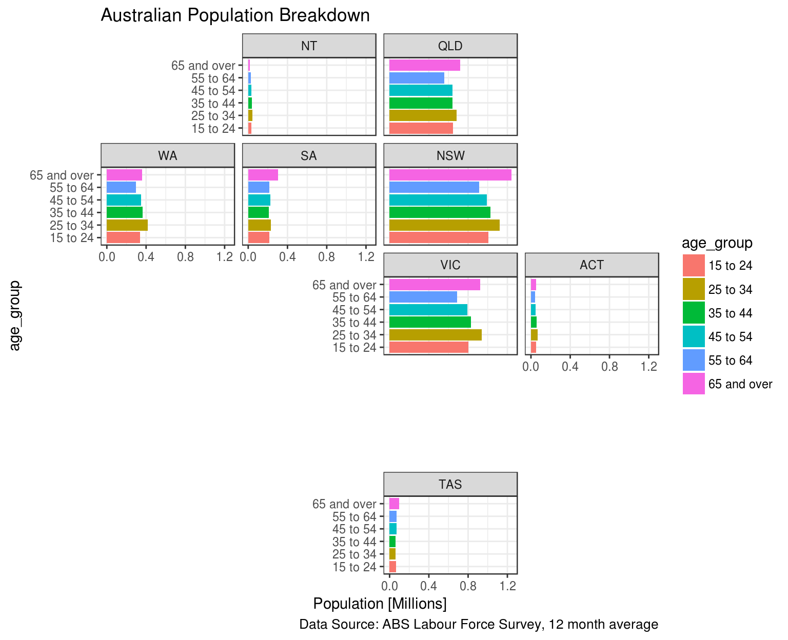
ggplot(sa_pop_dens, aes(factor(year), density, fill = factor(year))) +
geom_col() +
facet_geo(~ province, grid = "sa_prov_grid1") +
labs(title = "South Africa population density by province",
caption = "Data Source: Statistics SA Census",
y = "Population density per square km") +
theme_bw()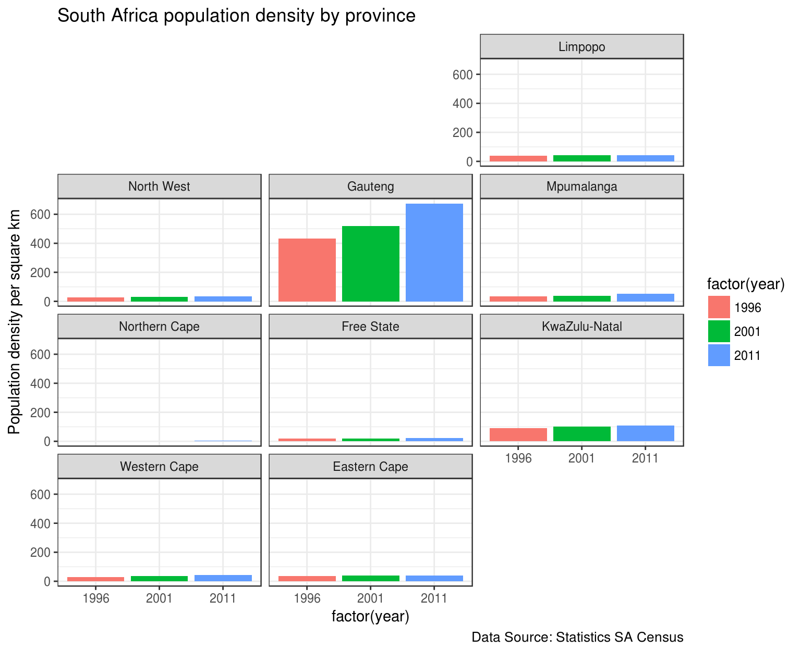
ggplot(london_afford, aes(x = year, y = starts, fill = year)) +
geom_col(position = position_dodge()) +
facet_geo(~ code, grid = "london_boroughs_grid", label = "name") +
labs(title = "Affordable Housing Starts in London",
subtitle = "Each Borough, 2015-16 to 2016-17",
caption = "Source: London Datastore", x = "", y = "")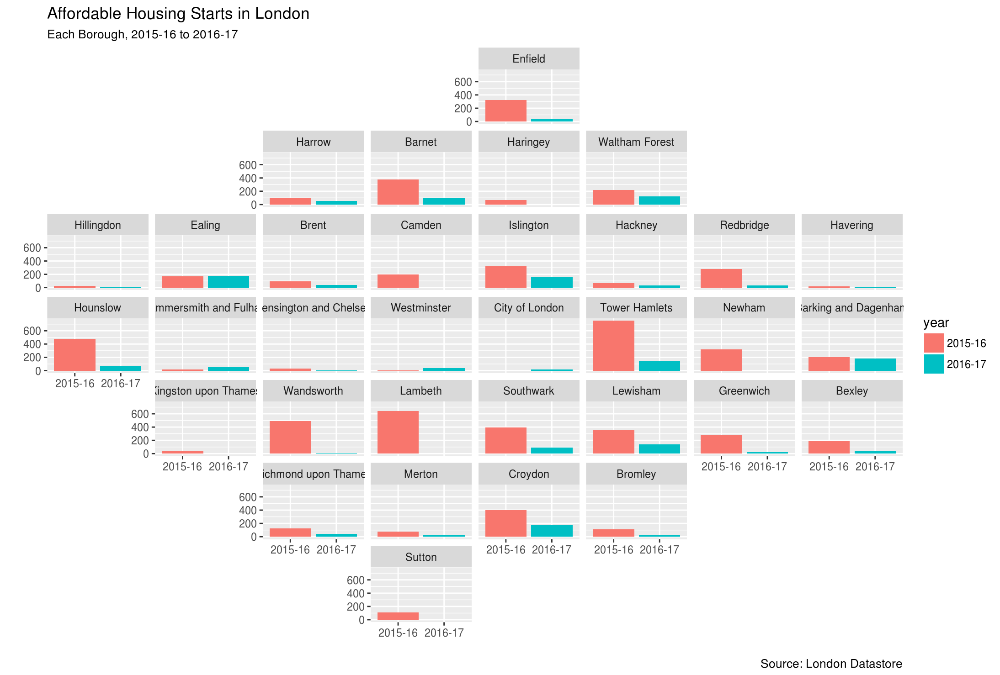
ggplot(nhs_scot_dental, aes(x = year, y = percent)) +
geom_line() +
facet_geo(~ name, grid = "nhs_scot_grid") +
scale_x_continuous(breaks = c(2004, 2007, 2010, 2013)) +
scale_y_continuous(breaks = c(40, 60, 80)) +
labs(title = "Child Dental Health in Scotland",
subtitle = "Percentage of P1 children in Scotland with no obvious decay experience.",
caption = "Source: statistics.gov.scot", x = "", y = "")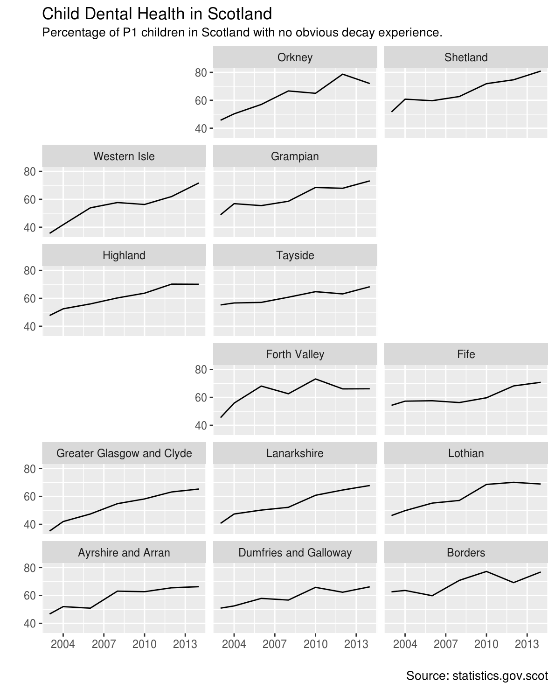
ggplot(subset(india_pop, type == "state"),
aes(pop_type, value / 1e6, fill = pop_type)) +
geom_col() +
facet_geo(~ name, grid = "india_grid2", label = "code") +
labs(title = "Indian Population Breakdown",
caption = "Data Source: Wikipedia",
x = "",
y = "Population [Millions]") +
theme_bw() +
theme(axis.text.x = element_text(angle = 40, hjust = 1))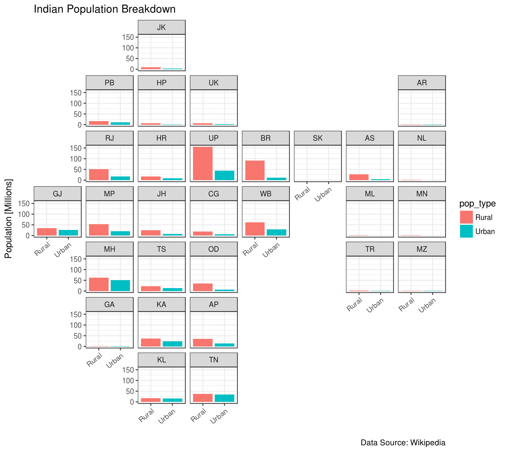
ggplot(election, aes("", pct, fill = candidate)) +
geom_col(alpha = 0.8, width = 1) +
scale_fill_manual(values = c("#4e79a7", "#e15759", "#59a14f")) +
facet_geo(~ state, grid = "us_state_grid2") +
scale_y_continuous(expand = c(0, 0)) +
labs(title = "2016 Election Results",
caption = "Data Source: http://bit.ly/2016votecount",
x = NULL,
y = "Percentage of Voters") +
theme(axis.title.x = element_blank(),
axis.text.x = element_blank(),
axis.ticks.x = element_blank(),
strip.text.x = element_text(size = 6))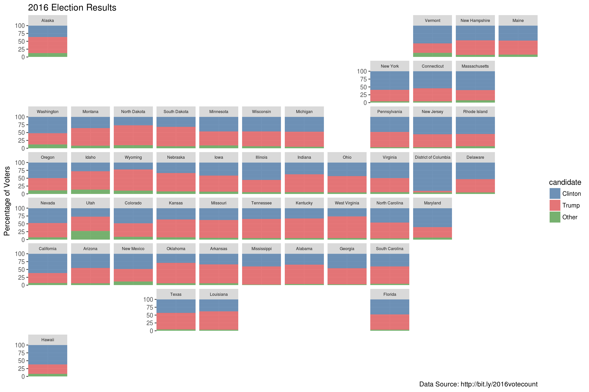
ggplot(election, aes(candidate, pct, fill = candidate)) +
geom_col() +
scale_fill_manual(values = c("#4e79a7", "#e15759", "#59a14f")) +
facet_geo(~ state, grid = "us_state_grid2") +
theme_bw() +
coord_flip() +
labs(title = "2016 Election Results",
caption = "Data Source: http://bit.ly/2016votecount",
x = NULL,
y = "Percentage of Voters") +
theme(strip.text.x = element_text(size = 6))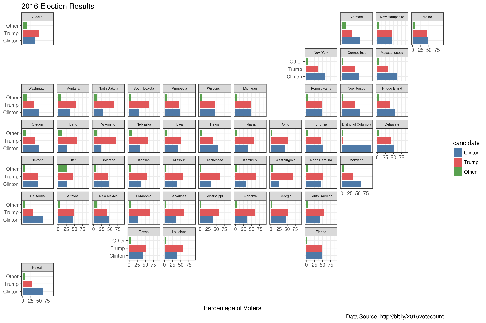
ggplot(election, aes(candidate, votes / 1000000, fill = candidate)) +
geom_col() +
scale_fill_manual(values = c("#4e79a7", "#e15759", "#59a14f")) +
facet_geo(~ state, grid = "us_state_grid2") +
coord_flip() +
labs(title = "2016 Election Results",
caption = "Data Source: http://bit.ly/2016votecount",
x = NULL,
y = "Votes (millions)") +
theme(strip.text.x = element_text(size = 6))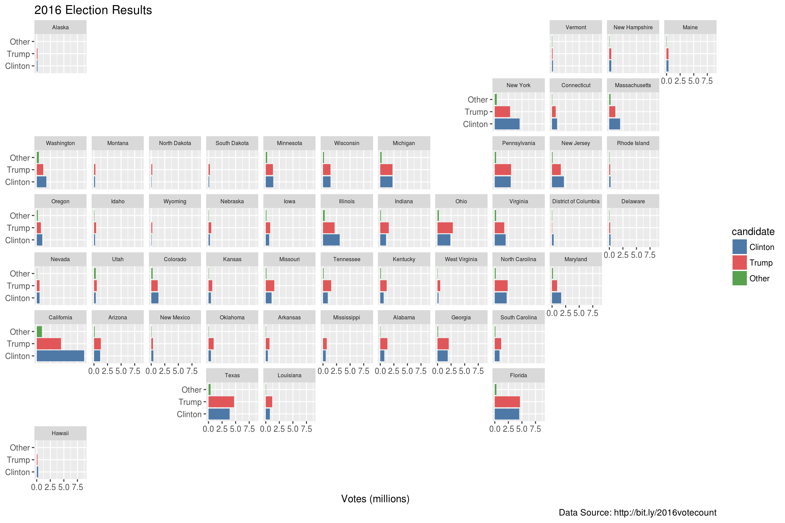